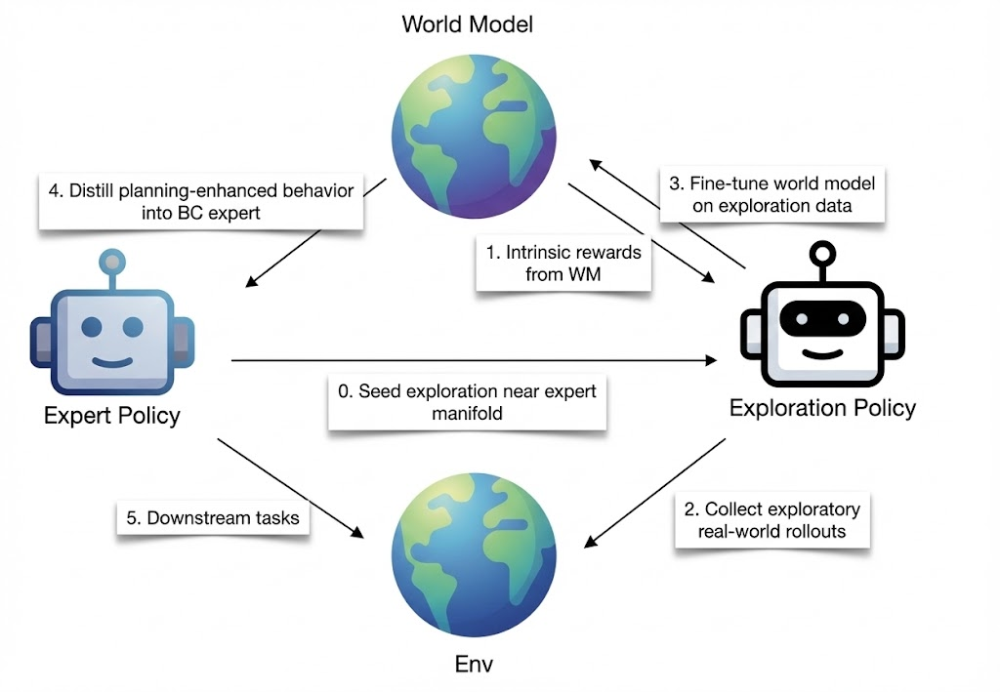

Why World Models?
In cognitive science, learning is often viewed as building internal models that organize experience,
connect it to prior knowledge, and support reasoning about the future. World models
,
bring this perspective into robotics by explicitly learning environment dynamics that can be reused
across tasks, settings, and embodiments.
Once trained, these models let robots imagine how actions will change the world and choose
behaviors accordingly. This parallels evidence from cognitive neuroscience
,
that humans rely on internal, map-like representations of space, perception, and action outcomes to
guide behavior.
From this perspective, I see four key challenges for world models in robotics:
-
Learning task-relevant latent spaces.
-
Enabling efficient planning toward diverse goals.
-
Acquiring scalable, diverse data.
-
Continual self-improvement through interaction.
Research Directions
Looking ahead, I see three directions as especially important for scaling world models toward
general-purpose robot intelligence.
1. Steering large video models toward action-conditioned prediction
Large pretrained video models
already encode rich temporal and causal structure from
Internet-scale, action-free data. If we can steer these models toward action-conditioned
prediction, we can transform broad visual understanding into actionable dynamics priors for
robots.
I view this as a natural interface between foundation video models
and world-model based control
,
,
,
,
where pretraining provides broad priors and robot data sharpens them
into reliable dynamics models.
1.1 Latent actions pretraining from raw videos
A complementary path is to extract latent actions directly from raw videos, learning
motion-centric representations that capture how scenes evolve over time and can later be
grounded to robot commands. In my previous works
,
, we study how such latent
action spaces, learned from large collections of robot and human videos, can serve as a bridge
between video prediction and actionable control, making it easier to transfer knowledge across
datasets and embodiments.
2. Unifying diverse sensory modalities
Real-world manipulation is fundamentally multimodal: robots must integrate RGB, depth, force,
tactile, and sometimes audio to act robustly. Achieving strong generalization will require
unifying diverse sensory modalities into a shared latent space where the world model can
reason jointly about contact, geometry, and semantics. We are working on this! Stay tuned.
3. Self-improving agents: explore, imagine, distill
Finally, I am interested in developing self-improving agents by letting world models and
policies refine one another in a continual loop. An exploration policy
can gather
diverse, imperfect experience that a world model can learn from. The world model can then perform
slower but accurate planning to generate high-quality imagined trajectories, which in turn can be
distilled into a fast, reactive policy.
This suggests an iterative cycle:
explore → imagine → distill.
The exploration policy broadens coverage of the environment; the world model consolidates
structure from this experience; and the distilled policy turns deliberate planning (System 2)
into intuitive, reactive behavior (System 1). This view resonates with hippocampal–cortical
consolidation and cognitive map theories
,
,
as well as proposals for
autonomous machine intelligence based on world models and actors
.

Self-improving world model cycle: explore, imagine, distill.
My long-term goal is to develop world models that can support this kind of continual self-improvement,
scaling from single-task setups to broad, open-ended robot skills — while remaining grounded in
physically realistic dynamics and efficient enough to deploy on real hardware.
|